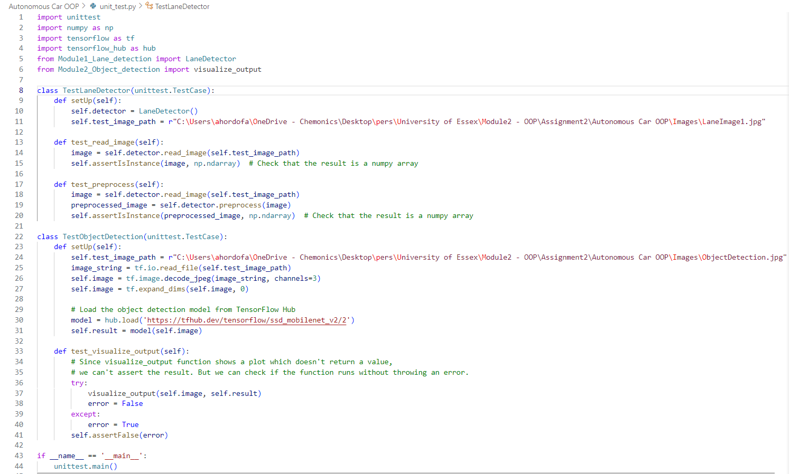

=======
Unit 10: Testing Code in Practice
In this Unit we examined the approaches to packaging Python code so that it is presented in a user-friendly manner for stakeholders. Prior to releasing code to stakeholders, we must ensure that it meets the client’s needs and that it has been fully tested. We will therefore also examine several approaches to test both the logic and syntax of the code created.
In this unit we shall:
- Apply unit tests to test the functionality of Python code.
- Use the pylint testing tool to automatically check acceptability of the style used to write the Python code.
- Experiment with approaches to commenting inline and documenting code.
On completion of this unit we are expected to be able to:
- Write unit tests to ensure correct functionality of Python code.
- Run pylint against a Python script to demonstrate stylistic correctness.
- Document code for release to stakeholders.
After developing Python code, this week’s content supports students in testing their code for functional correctness, in addition to accurate stylistic convention. This will be important for the code submitted as part of the summative assessment in Week 11.
Reflections
In Units 9 and 10
We covered packaging, testing, and testing code in practice. I found the lecture cast in unit 9 very informative and simple to understand, especially on the Cyclomatic complexity. The lessons from these units also provided me with adequate insights on how I could apply the tools and approaches to test the quality of my python code for the upcoming summative assessment – implementation of object-oriented python program to support driverless car. Based on these insights, I applied automated unit testing, functional testing, and structural testing in my codes.
Below is a screenshot of the unit testing that I applied in my implementation of the driverless car software using the in-built unittest module of python.

The code provided above is implementing unit tests for two classes: LaneDetector and ObjectDetection. It uses Python’s built-in unittest module to generate numpy array for the LaneDetector and outputting visualization for the ObjectDetection class.
In addition to the unit testing, I also conducted function testing by importing sample images for both lane detection and object detection, while also conducting a structural test to check how the codes are set up using the OOP standards.
e-Portfolio Activity
In this code, colour is an unprotected variable, and _registration_number is a protected variable. The same applies to the methods get_color and _get_registration_number. Even though _registration_number and _get_registration_number can be accessed, the underscore prefix is a hint to the programmer that they should not be accessed directly.

References
www.tutorialspoint.com. (n.d.). Protected variable in Python. [online] Available at: https://www.tutorialspoint.com/protected-variable-in-python [Accessed 01 Feb. 2024].